228 papers · 49 relevant · 5 highlighted
Every paper with at least one nonzero topic score, sorted by best-matching score. 🔥 marks scores ≥4/5. Click the title to jump to the full entry below; click [arXiv] to open the paper page. (secondary) marks papers from de-prioritized cond-mat archives.
analog quantum simulation 5/5 · 🔥 exotic spin models in light-matter 4/5 · 🔥 non-equilibrium dynamics 4/5 · entanglement & information structure 3/5 · QC/QI experiment 2/5 · non-equilibrium universality 2/5 · quantum measurements 2/5free-space correlated emission 5/5 · 🔥 Dicke superradiance 4/5 · 🔥 correlated / nonlocal dissipation 4/5 · methods for driven-dissipative 2/5 · non-equilibrium universality 2/5quantum optics experiment 5/5 · 🔥 QC/QI experiment 4/5 · interference shaping light 3/5 · entanglement & information structure 2/5 · quantum measurements 2/5spintronics-quantum-optics interface 5/5 · 🔥 entanglement & information structure 4/5 · Tavis-Cummings & cavity-many-emitter 2/5 · correlated / nonlocal dissipation 2/5QC/QI experiment 5/5 · 🔥 entanglement & information structure 4/5 · quantum measurements 2/5scars & prethermalization 5/5 · entanglement & information structure 3/5 · non-equilibrium dynamics 3/5measurement-induced transitions 4/5 · 🔥 quantum measurements 4/5 · driven-dissipative phase transition 3/5 · non-equilibrium universality 3/5 · Keldysh / 2PI / non-Gaussian methods 2/5 · entanglement & information structure 2/5 · methods for driven-dissipative 2/5 · non-equilibrium dynamics 2/5correlated cavity matter 4/5 · 🔥 entanglement & information structure 4/5 · Keldysh / 2PI / non-Gaussian methods 3/5 · spintronics-quantum-optics interface 3/5 · Tavis-Cummings & cavity-many-emitter 2/5 · analog quantum simulation 2/5 · correlated / nonlocal dissipation 2/5 · exotic spin models in light-matter 2/5non-equilibrium dynamics 4/5 · Kondo & dissipative impurity 3/5 · analog quantum simulation 3/5 · entanglement & information structure 3/5 · Keldysh / 2PI / non-Gaussian methods 2/5 · non-equilibrium universality 2/5non-equilibrium universality 4/5 · Tavis-Cummings & cavity-many-emitter 3/5 · non-equilibrium dynamics 3/5 · analog quantum simulation 2/5 · correlated cavity matter 2/5 · entanglement & information structure 2/5entanglement & information structure 4/5 · 🔥 non-equilibrium dynamics 4/5 · non-equilibrium universality 3/5 · scars & prethermalization 3/5methods for driven-dissipative 4/5 · driven-dissipative phase transition 3/5 · non-equilibrium dynamics 3/5 · correlated / nonlocal dissipation 2/5 · entanglement & information structure 2/5(secondary) — 🔥 quantum optics experiment 4/5 · correlated cavity matter 3/5 · QC/QI experiment 2/5 · Tavis-Cummings & cavity-many-emitter 2/5 · analog quantum simulation 2/5non-equilibrium dynamics 4/5 · methods for driven-dissipative 3/5 · Keldysh / 2PI / non-Gaussian methods 2/5 · driven-dissipative phase transition 2/5 · non-equilibrium universality 2/5correlated / nonlocal dissipation 4/5 · quantum measurements 3/5 · Tavis-Cummings & cavity-many-emitter 2/5 · entanglement & information structure 2/5 · methods for driven-dissipative 2/5Kondo & dissipative impurity 4/5 · 🔥 methods for driven-dissipative 4/5 · non-equilibrium dynamics 3/5 · Keldysh / 2PI / non-Gaussian methods 2/5non-equilibrium dynamics 4/5 · analog quantum simulation 3/5 · methods for driven-dissipative 3/5 · driven-dissipative phase transition 2/5QC/QI experiment 4/5 · 🔥 quantum optics experiment 4/5 · interference shaping light 2/5 · spintronics-quantum-optics interface 2/5quantum measurements 4/5 · correlated / nonlocal dissipation 2/5 · entanglement & information structure 2/5 · methods for driven-dissipative 2/5 · non-equilibrium dynamics 2/5correlated / nonlocal dissipation 4/5 · methods for driven-dissipative 3/5 · entanglement & information structure 2/5 · non-equilibrium dynamics 2/5non-equilibrium dynamics 4/5 · methods for driven-dissipative 3/5 · driven-dissipative phase transition 2/5 · entanglement & information structure 2/5entanglement & information structure 4/5 · 🔥 non-equilibrium dynamics 4/5 · driven-dissipative phase transition 2/5analog quantum simulation 4/5 · 🔥 non-equilibrium dynamics 4/5 · exotic spin models in light-matter 2/5(secondary) — 🔥 QC/QI experiment 4/5 · 🔥 quantum optics experiment 4/5 · interference shaping light 2/5non-equilibrium dynamics 4/5 · non-equilibrium universality 3/5 · Keldysh / 2PI / non-Gaussian methods 2/5correlated / nonlocal dissipation 4/5 · non-equilibrium dynamics 3/5 · methods for driven-dissipative 2/5entanglement & information structure 4/5 · non-equilibrium dynamics 3/5 · spintronics-quantum-optics interface 2/5quantum measurements 4/5 · methods for driven-dissipative 3/5 · non-equilibrium dynamics 2/5quantum optics experiment 4/5 · QC/QI experiment 3/5 · quantum measurements 2/5QC/QI experiment 4/5 · 🔥 quantum optics experiment 4/5entanglement & information structure 4/5 · methods for driven-dissipative 2/5 · quantum measurements 2/5quantum measurements 4/5 · entanglement & information structure 2/5 · non-equilibrium dynamics 1/5entanglement & information structure 4/5 · non-equilibrium dynamics 2/5QC/QI experiment 4/5 · spintronics-quantum-optics interface 2/5QC/QI experiment 4/5 · methods for driven-dissipative 2/5interference shaping light 4/5 · quantum measurements 2/5entanglement & information structure 4/5 · quantum measurements 2/5quantum measurements 4/5 · methods for driven-dissipative 2/5scars & prethermalization 4/5 · non-equilibrium dynamics 2/5interference shaping light 4/5 · non-equilibrium dynamics 2/5analog quantum simulation 4/5 · non-equilibrium dynamics 2/5QC/QI experiment 4/5 · quantum measurements 1/5QC/QI experiment 4/5 · quantum measurements 1/5methods for driven-dissipative 4/5QC/QI experiment 4/5QC/QI experiment 4/5QC/QI experiment 4/5QC/QI experiment 4/5entanglement & information structure 4/5Papers by authors on your watch list. Click the title to jump to the full entry below; click [arXiv] to open the paper page.
Papers from quant-ph and your primary cond-mat archives (quant-gas, stat-mech, str-el, dis-nn). Highlighted papers (⭐) come first, then everything else sorted by topic-relevance score, highest first.
← Index · ← Previous · Next →
Authors: Lennart Binkowski
Type: theory · Category: quantum information and computing · PDF: https://arxiv.org/pdf/2604.24362v1
Analysis basis: full PDF text, analyzed in chunks
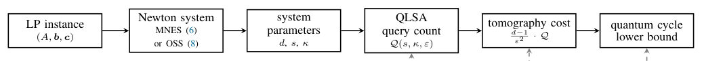
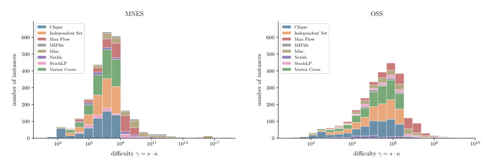
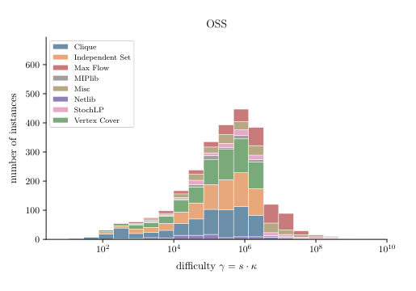
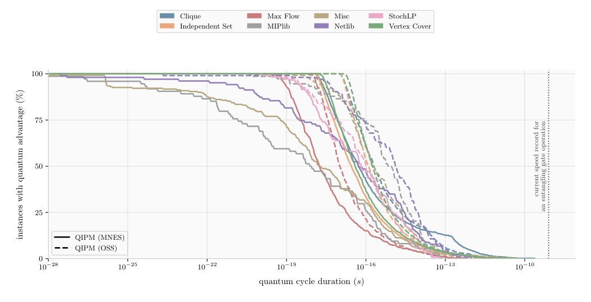
Main problem. Determining whether the asymptotic polynomial speed-ups promised by hybrid quantum interior point methods (QIPMs) translate into practical advantages for solving linear programming problems on realistic instances.
Main result. The study establishes that quantum runtime lower bounds exceed classical runtimes for all tested instances at realistic quantum cycle durations, effectively ruling out practical advantage for these hybrid QIPMs.
Method. A hybrid benchmarking approach that derives rigorous lower bounds on quantum runtime using highly benevolent assumptions and compares them against the classical HiGHS solver.
Summary. This paper investigates the practical viability of hybrid quantum algorithms for linear programming. By comparing the best-case quantum runtime lower bounds against state-of-the-art classical solvers, the author demonstrates that the overhead from state tomography and the complexity of the Newton systems prevent any practical advantage. The findings suggest that for realistic problem instances and hardware cycle times, classical solvers like HiGHS remain superior.
Model / system. The mathematical model is Linear Programming (LP) solved via Primal-Dual Path-Following Interior Point Methods, utilizing a quantum pipeline with Chebyshev-based Quantum Linear System Algorithms (QLSAs) and state tomography.
Key observables. Quantum runtime lower bounds, effective difficulty (product of sparsity and condition number), and tomography overhead.
Important parameters / regimes. Sparsity (s), condition number (kappa), target precision (epsilon), and quantum cycle duration.
Assumptions / limitations. Highly benevolent assumptions including noise-free hardware, single-cycle oracle execution, convergence in a single iteration, and minimal iterative refinement steps.
Figures summary. Figure 1 illustrates the quantum runtime lower bound pipeline; Figure 2 shows the distribution of effective difficulty across different problem classes; Figure 3 plots the percentage of instances where quantum lower bounds are below classical runtimes relative to quantum cycle duration.
Paper structure. The paper introduces the QIPM framework, defines the benchmarking methodology and benevolent assumptions, presents the numerical estimation of system parameters, provides the exclusion analysis results across various problem families, and identifies the tomography overhead as the primary bottleneck.
Quantum interior point methods (QIPMs) promise polynomial speed-ups over classical solvers for linear programming by outsourcing the solution of Newton linear systems to quantum linear solvers (QLSAs). However, asymptotic speed-ups do not necessarily translate to practical advantages on realistic problem instances. In this work, I evaluate whether practical advantage of a standard hybrid QIPM pipeline can already be excluded relative to the classical open-source solver HiGHS on a broad and diverse collection of LP instances spanning eight problem families, including public benchmark libraries, such as MIPlib, and relaxations of combinatorial optimisation problems. Following the hybrid benchmarking paradigm initiated by Cade et al., I derive rigorous lower bounds on the quantum runtime under a series of highly benevolent assumptions and compare them against classical runtimes. I equip the QIPMs with the best-performing functional QLSA, the Chebyshev-based method, as identified by Lefterovici et al., and evaluate two Newton system formulations proposed by Mohammadisiahroudi et al.: the modified normal equation system and the orthogonal subspace system. The exclusion analysis yields a consistent negative picture: across all instances and for any realistic quantum cycle duration, the quantum runtime lower bounds already exceed the classical runtimes, establishing that these hybrid QIPMs will offer no practical advantage over good classical solvers for realistic linear programming instances.
Authors: Yuval Idan, Eitan Zahavi, Elad Mentovich, Eliahu Cohen, Shmuel Zaks
Type: theory · Category: quantum information and computing · PDF: https://arxiv.org/pdf/2604.23700v1
Analysis basis: full PDF text, analyzed in chunks
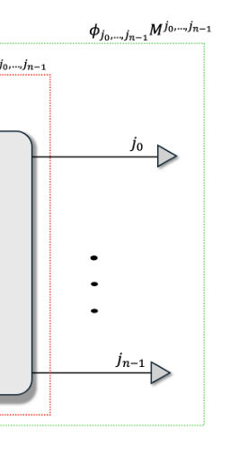
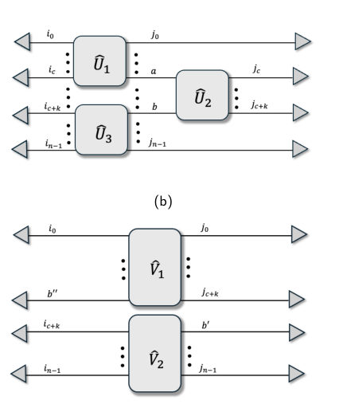
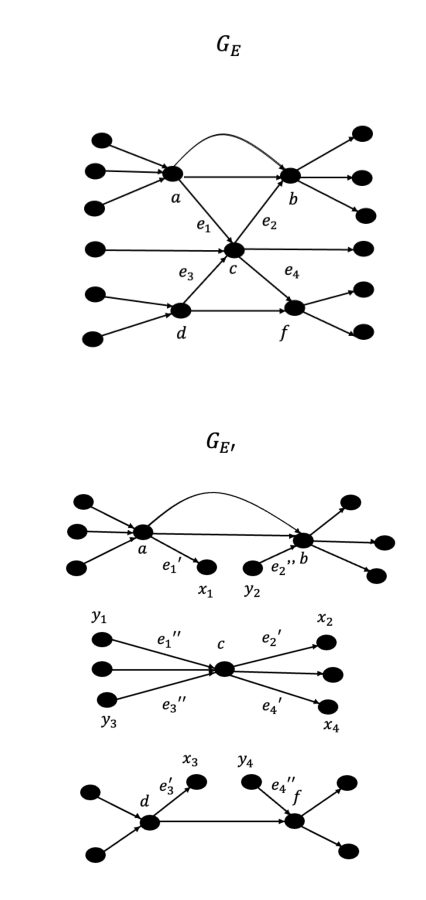
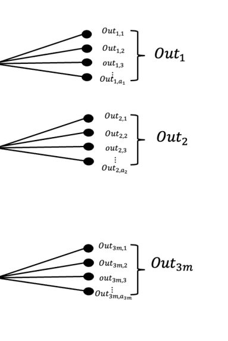
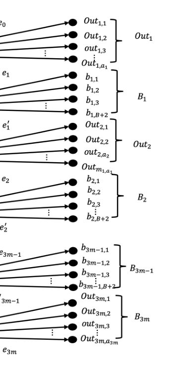
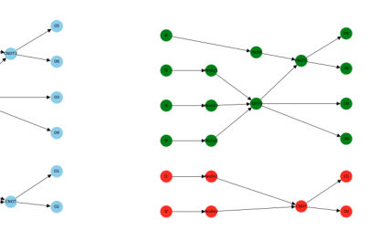
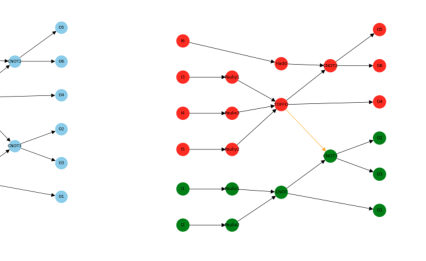
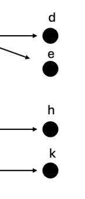
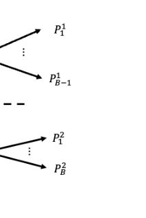
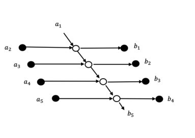
Main problem. The paper addresses the computational complexity and optimization of quantum circuit cutting, which involves partitioning large quantum circuits into smaller fragments to be processed on multiple smaller QPUs.
Main result. The authors prove that finding the optimal circuit-cutting configuration (the Graph Duplication problem) is NP-complete in general and even for simplified 2-qubit gate circuits, but can be solved in polynomial time if the number of cuts is constant.
Method. The work uses a graph-theoretic framework mapping circuits to Directed A-cyclic Graphs (DAGs) and employs reductions from the 3-partition problem to establish complexity, alongside an SMT-based solver for practical optimization.
Summary. This paper provides a rigorous complexity-theoretic analysis of quantum circuit cutting, a vital technique for executing large circuits on fragmented NISQ hardware. By mapping the cutting process to a graph duplication problem, the authors demonstrate that finding optimal cuts is NP-complete. However, they also show that the problem is tractable when the number of cuts is small and provide an SMT-based solver to find these optimal configurations. This work helps define the computational limits of circuit decomposition strategies.
Model / system. The study focuses on the NISQ era quantum circuit model, representing quantum operations as tensors and qubit trajectories as edges within a Directed Acyclic Graph (DAG) or Tensor Network.
Important parameters / regimes. beta (number of edge duplications/cuts), alpha (number of clusters), k (maximum number of input/output wires per cluster), and the qubit budget Q.
Assumptions / limitations. The analysis focuses on 'timelike' cuts (wire cuts) and assumes 'legal' DAGs where the number of inputs equals the number of outputs.
Figures summary. Figure 1 shows tensor network evolution; Figure 2 illustrates unitary decomposition; Figure 3 shows the graph duplication protocol; Figures 4-7 visualize complexity proofs and SMT solver performance; Figures 8-10 detail the mathematical construction for NP-completeness proofs.
Paper structure. The paper introduces the circuit cutting problem, establishes a graph-theoretic duality, provides a complexity characterization (identifying polynomial and NP-complete regimes), proposes an SMT-based optimization algorithm, and provides rigorous mathematical proofs in the appendix.
The current noisy intermediate-scale quantum (NISQ) era is characterized by substantial errors and noise, which limit the practical feasibility of deep, many-qubit circuits. To address these constraints, quantum circuit cutting has emerged as a promising tool. Recently, there has been significant research on methods for performing such cutting effectively. In this work, the duality between quantum circuits and classical graphs - specifically, directed acyclic graphs (dags) - is leveraged to analyze the complexity of finding an optimal circuit-cutting configuration that minimizes the number of cuts. After developing a rigorous graph-theoretic framework, the complexity of identifying cut locations that partition a given quantum circuit into smaller fragments is characterized. The corresponding graph-combinatorial task is then defined, and the resulting partition problem is shown to be NP-complete. Furthermore, even a simplified version of the problem, restricted to circuits composed only of one- and two-qubit gates, is shown to be NP-complete. Finally, based on these constraints, an algorithm grounded in satisfiability modulo theories (SMT) is proposed to find optimal cuts when the number of qubits per partition is bounded. This work therefore provides a complexity-theoretic characterization of cut placement and a practical solver for bounded-size decompositions.
Authors: Eric A. Galapon
Type: theory · Category: other · PDF: https://arxiv.org/pdf/2604.23544v1
Analysis basis: full PDF text, analyzed in chunks
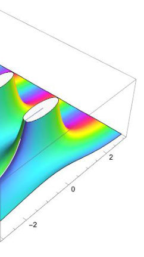
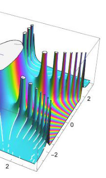
Main problem. The paper addresses the lack of continuity in standard Riemann zeta regularization when moving from integer to non-integer exponents alpha in divergent power sums.
Main result. The author develops a new regularization prescription using fractional extensions of differential generators that recovers Riemann zeta regularization as a special case while ensuring continuity and providing additional terms determined by the generator.
Method. The method employs fractional calculus, contour integration using Hankel-type contours, and the construction of a Generalized Spectral Function (GSF) via a differential generator L.
Summary. This paper introduces a generalized mathematical framework for regularizing divergent power series. By using fractional extensions of differential operators, the author creates a regularization scheme that is continuous for both integer and non-integer exponents. This method generalizes the well-known Riemann zeta regularization and allows for new regularized values that depend on the specific choice of a differential generator. The work provides a consistent way to handle branch points and singularities in the context of spectral functions.
Model / system. The mathematical framework is applied to the regularization of divergent sums of the form sum n^alpha, with physical motivation drawn from non-interacting fermions in a box and the calculation of restoring forces.
Key observables. Regularized power sums, regularized products, and the generalized zeta function.
Important parameters / regimes. The exponent alpha (complex order), the differential generator L, and the function h(t) defining the generator.
Assumptions / limitations. The Generalized Spectral Function must have a holomorphic complex extension with a pole at the origin, and the function Phi(z) is assumed to be an entire function.
Figures summary. Figure 1 shows a complex plot of the polylogarithm Li_alpha(exp(-z)) highlighting branch cuts; Figure 2 shows a complex plot of the polylogarithm with a more complex generator, illustrating additional branch cuts.
Paper structure. The paper begins by defining the regularization problem, introduces the differential generator and GSF framework, develops the fractional extension via contour integrals, proves the equivalence of differential and integral forms, and concludes with explicit examples and comparison to Riemann zeta regularization.
We reconsider the problem of regularizing the divergent series $\sum_{n=1}^{\infty}n^α$ for $\operatorname{Re}α>-1$, and offer a regularization prescription that yields the Riemann zeta regularization as a special case. The development of the regularization is framed as a two-step problem. The first step is prescribing a regularization of the divergent sum $\sum_{n=1}^{\infty}n^m$ for every non-negative integer $m$; and the second step is the extension of the sum for non-integer $α$. The extension is obtained under the consistency condition that the regularized sum for integer $m$ emerges continuously from the sum for non-integer $α$. The scheme is specified by a differential generator $L=L(\mathrm{d}/\mathrm{d}t)$ through which a generalized spectral function (GSF), $K_L(t)$, is constructed. Under the condition that the GSF has a holomorphic complex extension $K_L(z)$ with $z=0$ as a pole, the case for integer $m$ takes the regularized value $\sum_{n=1}^{\infty} n^m = (2πi)^{-1}\oint_C L^m K_L(z) z^{-1}\mathrm{d}z$, where $C$ is a closed contour enclosing only the pole of $K_L(z)$ at the origin. On the other hand, under the consistency condition, the case for non-integer $α$ takes the value $\sum_{n=1}^{\infty}n^α=(2πi)^{-1}\int_{\tilde{C}} L^α K_L(z) z^{-1}\mathrm{d}z$, where $L^α$ is the fractional extension of $L^m$ and $\tilde{C}$ is an appropriate deformation of the contour $C$. Here, we obtain the regularization corresponding to the generator $L=h(t) \mathrm{d}/\mathrm{d}t$, where $h(t)$ has the analytic extension $h(z)$ such that $1/h(z)$ is an entire function. We find that the regularized sum is equal to the Riemann zeta regularized value plus terms determined by the generator $L$.
Authors: Neelam Shukla, Oleksandr V. Marchukov, Bastien Humbert, Jan Arlt, Jeremy Armstrong, Artem G. Volosniev
Type: theory · Category: quantum gases · PDF: https://arxiv.org/pdf/2604.23219v1
Analysis basis: full PDF text, analyzed in chunks
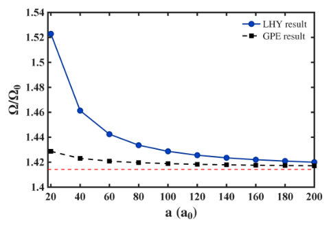
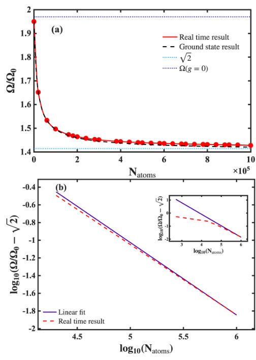
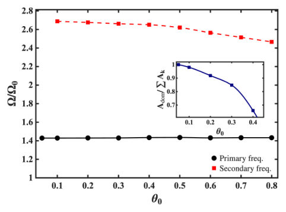
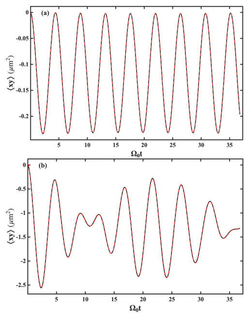
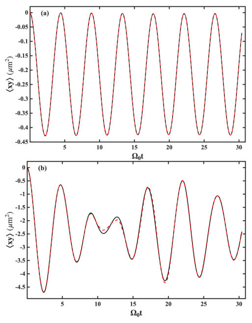
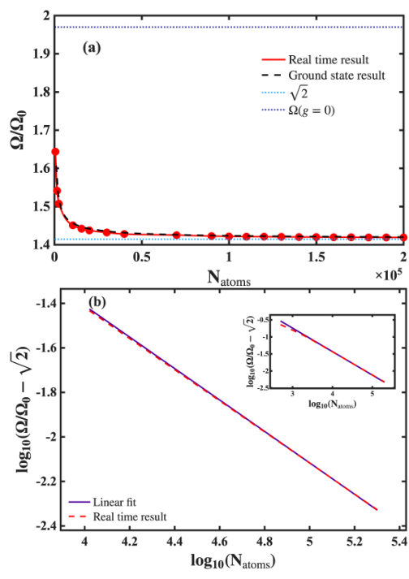
Main problem. The study investigates whether the frequency of scissors modes in nonlinear quantum systems depends on the specific form of the nonlinearity (compressibility) in the Thomas-Fermi regime.
Main result. The authors establish that in the Thomas-Fermi regime, the scissors mode frequency is universal and independent of the power-law index of the nonlinearity, acting as a pure shear mode. They also show that the frequency transitions from a non-interacting limit to a universal Thomas-Fermi limit as atom number increases.
Method. The study employs analytical derivation using a linear approximation and the method of characteristics, alongside numerical simulations using the split-step Crank-Nicolably method to solve the generalized Gross-Pitaevskii equation.
Summary. This paper investigates the behavior of scissors modes in quantum gases described by generalized Gross-Pitaevskii equations. It proves that in the strongly interacting Thomas-Fermi regime, the frequency of these rotational oscillations is universal and does not depend on the specific type of nonlinearity. By simulating both standard and Lee-Huang-Yang systems, the authors demonstrate how the frequency transitions from the non-interacting to the universal limit as the number of atoms increases. The findings highlight that the scissors mode is a pure shear mode that does not probe system compressibility.
Model / system. The system consists of degenerate Bose gases, specifically comparing standard Gross-Pitaevskii (GPE) and Lee-Huang-Yang (LHY) regimes, modeled by a generalized Gross-Pitaevskii equation with arbitrary power-law nonlinearity in an anisotropic harmonic trap.
Key observables. The scissors mode frequency (Omega), the expectation value of the xy coordinate (proxy for oscillation angle), and the angular momentum operator.
Important parameters / regimes. Power-law index (gamma), atom number (N_atoms), interaction strength (g), scattering length (a), and trap frequencies (omega_x, omega_y).
Assumptions / limitations. The analysis assumes the Thomas-Fermi regime (neglecting quantum pressure) and a small rotation angle (theta_0 << 1) for the analytical derivation.
Figures summary. Figure 1 shows scissors mode frequency vs. atom number approaching the TF limit; Figure 2 shows frequency vs. scattering length; Figure 5 illustrates the frequency convergence to the large-atom limit; Figure 6 compares sinusoidal vs. complex multi-mode oscillations at different initial angles.
Paper structure. The paper begins with an analytical derivation of the scissors mode frequency in generalized nonlinear systems, followed by numerical validation using LHY and GPE models, an exploration of the transition between interaction regimes, and an analysis of the effects of large initial perturbations.
Why it may be interesting. This paper is interesting because it identifies a universal, nonlinearity-independent feature (the scissors mode frequency) in quantum fluids, providing a robust diagnostic tool for characterizing different types of quantum liquids like LHY systems.
We investigate scissors modes in nonlinear systems with arbitrary power-law dependence of the nonlinear term. Through analytical derivation, we establish a general expression demonstrating that, in the Thomas-Fermi regime, the frequency of the scissors mode is independent of the specific form of the nonlinearity. We conclude that the scissors mode is a shear mode that does not probe the compressibility of the system, which depends on nonlinearity. To validate our findings, we perform numerical simulations of experimentally relevant Lee-Huang-Yang (LHY) systems. Our results illustrate the transition of the scissors mode frequency from the non-interacting to the strongly interacting (Thomas-Fermi) regime. Finally, we demonstrate that the scissors mode frequency remains clearly identifiable even under strong quenches, which should facilitate the experimental observation of our findings.
Authors: Nontapat Wanwieng, Apimook Watcharangkool
Type: theory · Category: other · PDF: https://arxiv.org/pdf/2604.24751v1
Analysis basis: full PDF text, analyzed in chunks
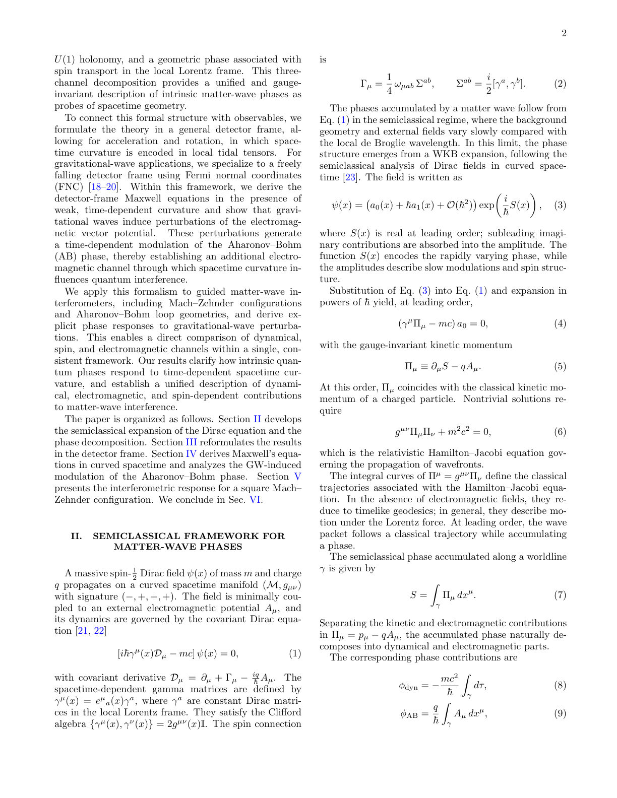
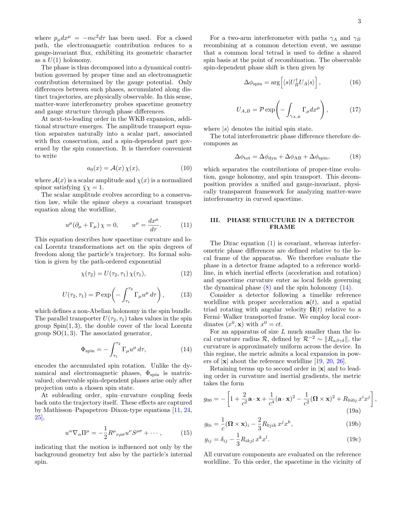
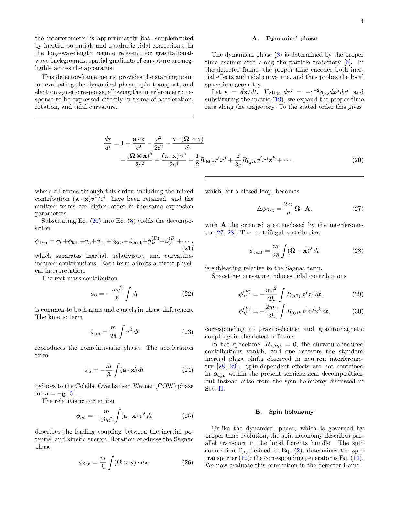
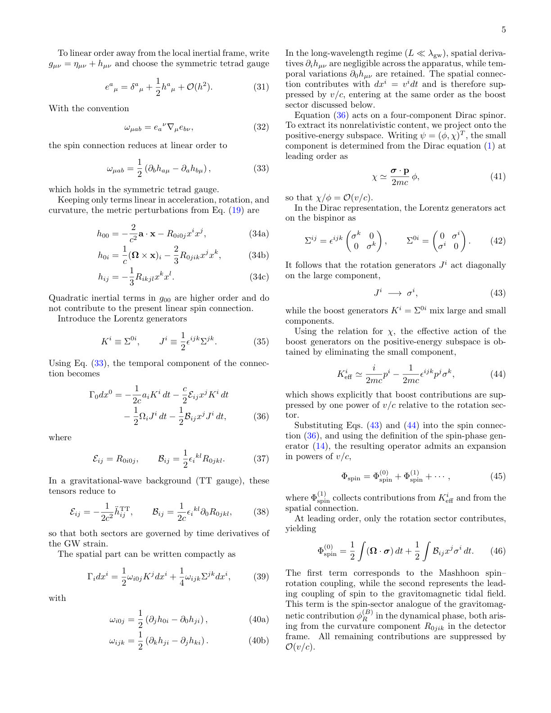
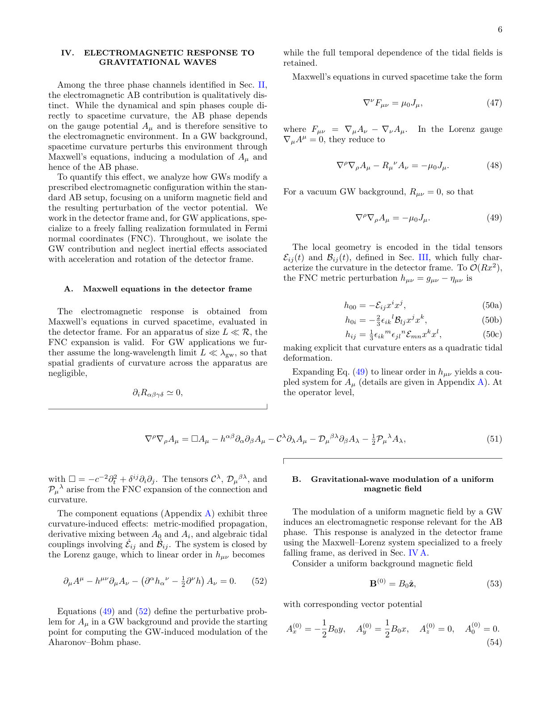
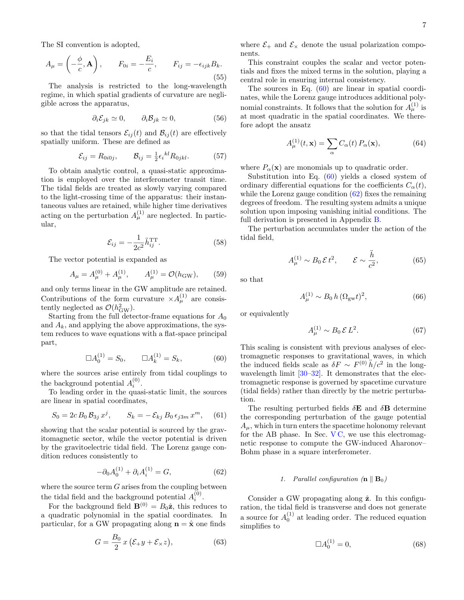
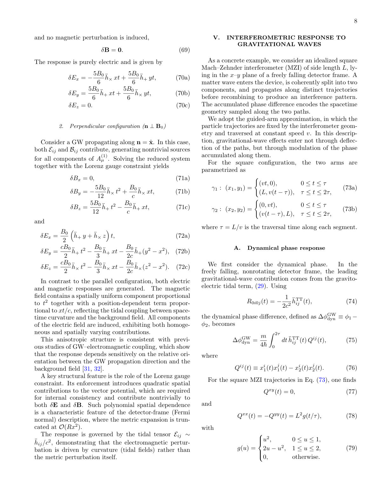
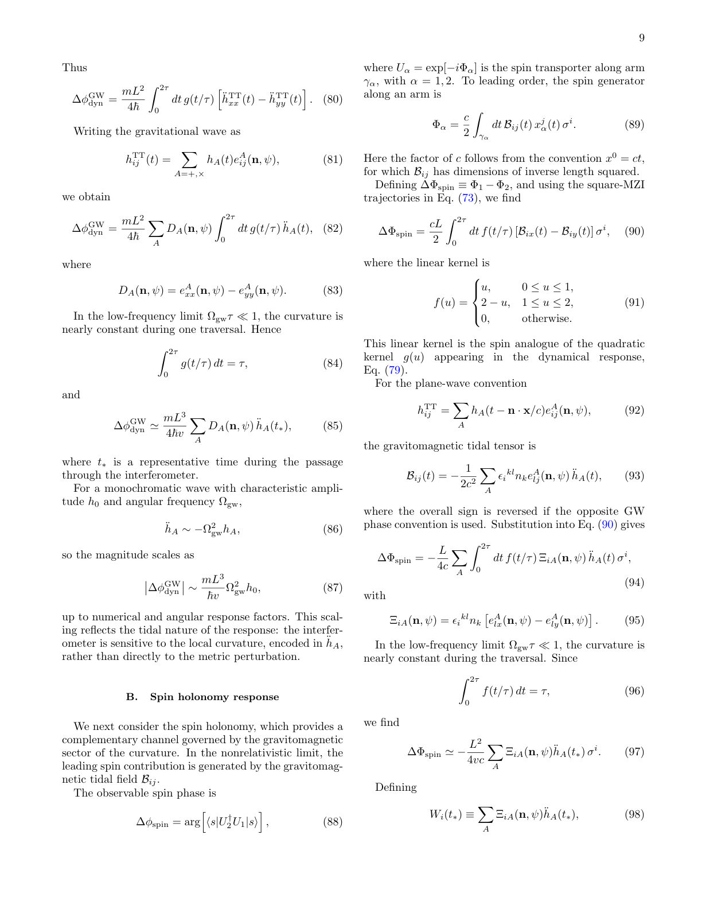
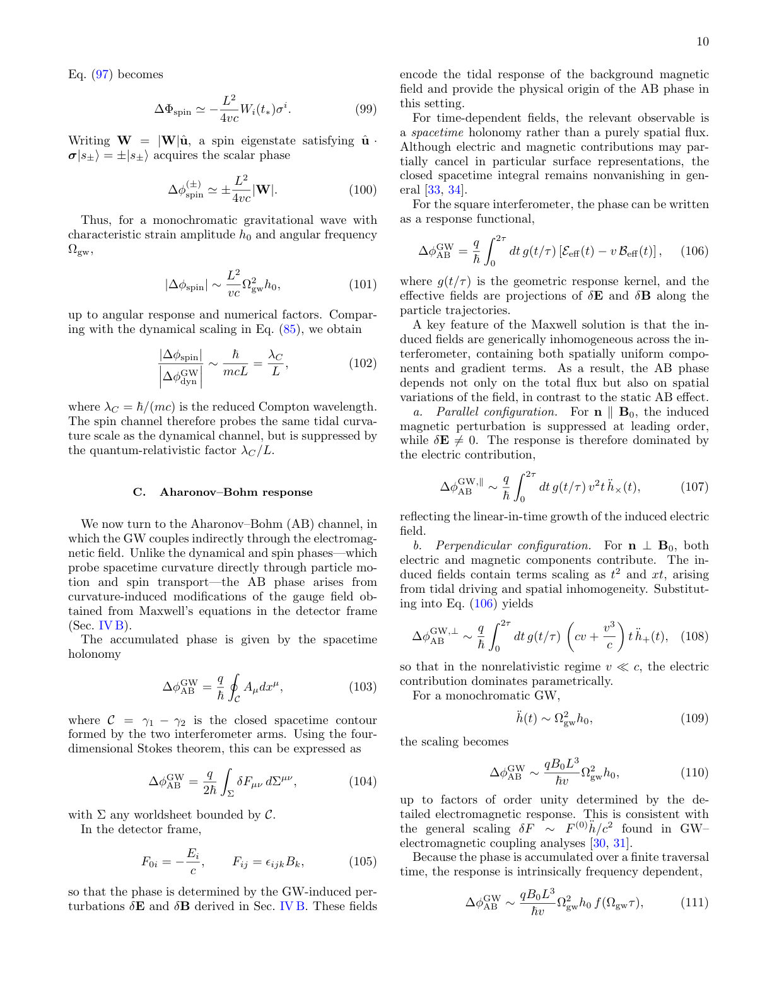
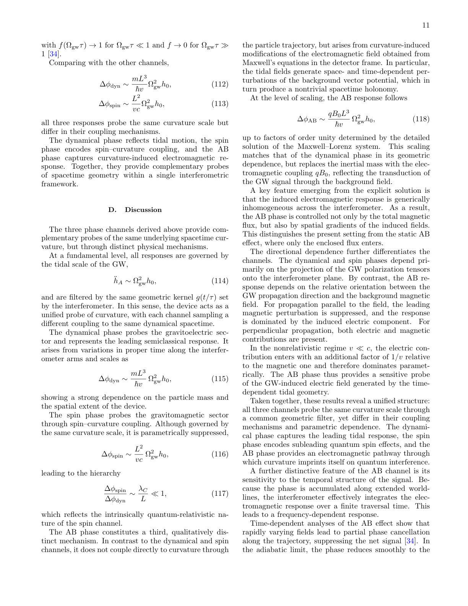
Main problem. Developing a unified, gauge-invariant semiclassical framework to describe how the different components of a charged spin-1/2 matter-wave interferometer phase respond to time-dependent gravitational wave backgrounds.
Main result. The study identifies three distinct, complementary phase channels (dynamical, spin, and electromagnetic AB) that all probe the same tidal curvature scale, with the AB phase specifically arising from GW-induced perturbations to the electromagnetic field.
Method. A semiclassical WKB expansion of the covariant Dirac equation is used within the Fermi Normal Coordinate framework to analyze phase accumulation in a freely falling detector frame.
Summary. This paper provides a unified theoretical description of how charged spin-1/2 matter-wave interferometers sense gravitational waves. It demonstrates that the total interferometric phase consists of three distinct channels: a dynamical phase, a spin-dependent phase, and an electromagnetic Aharonov-Bohm phase. While all three channels are driven by the same tidal curvature scale, they arise from different physical couplings—namely, inertial motion, spin-curvature coupling, and curvature-induced electromagnetic perturbations. This work identifies how spacetime curvature imprints itself on quantum interference through multiple, complementary pathways.
Model / system. A charged spin-1/2 matter-wave interferometer (such as a Mach-Zehnder configuration) propagating through a weak gravitational wave background with an additional background magnetic field.
Key observables. Total accumulated phase difference, decomposed into dynamical phase, spin holonomy (spin phase), and electromagnetic Aharon-Bohm phase.
Important parameters / regimes. Tidal scale (ddot{h} ~ Omega^2 h0), particle mass (m), charge (q), interferometer side length (L), GW frequency (Omega_gw), and background magnetic field (B0).
Assumptions / limitations. Semiclassical (WKB) limit, long-wavelength limit (L << lambda_gw), weak gravitational wave background, and the quasi-static approximation for tidal fields.
Paper structure. The paper begins with a derivation of the semiclassical framework from the Dirac equation, proceeds to decompose the phase into three physical channels, analyzes the electromagnetic response of the system to curvature, and concludes by comparing the scaling and sensitivity of the different phase components.
A matter wave propagating through curved spacetime accumulates phase that encodes both geometry and gauge structure. We develop a semiclassical framework for charged spin-$1/2$ matter-wave interferometers based on a WKB expansion of the covariant Dirac equation, in which the phase decomposes into dynamical, spin, and electromagnetic Aharonov-Bohm (AB) contributions. In a freely falling detector frame, all three channels are governed by local tidal fields. In a weak gravitational-wave (GW) background, the dynamical and spin phases probe the gravitoelectric and gravitomagnetic sectors of curvature, while the AB phase arises from curvature-induced electromagnetic fields obtained from Maxwell's equations in curved spacetime. For a Mach-Zehnder interferometer (MZI), all three responses are determined by the same tidal scale, $\ddot{h}_A \sim Ω^2_{gw}h_0$, and filtered by a common geometric kernel, while entering through distinct physical couplings. In particular, the AB contribution depends not only on the enclosed flux but also on spatial variations of the induced fields and exhibits an intrinsic frequency dependence set by the traversal time. These results provide a unified description of matter-wave interferometric phases in time-dependent GW backgrounds and identify complementary dynamical, spin, and electromagnetic pathways through which spacetime curvature imprints itself on quantum interference.
Authors: Albert J. Wakhloo
Type: theory · Category: disordered systems and neural networks · PDF: https://arxiv.org/pdf/2604.24141v1
Analysis basis: full PDF text, analyzed in chunks
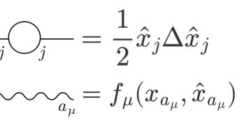
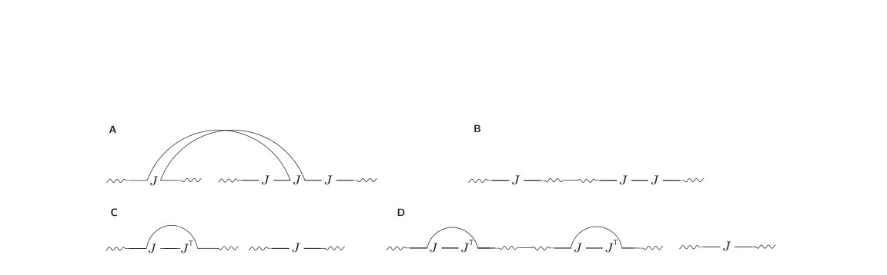
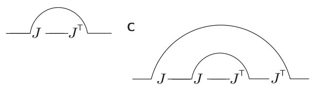
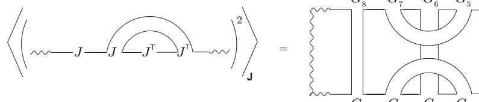
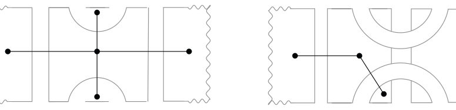
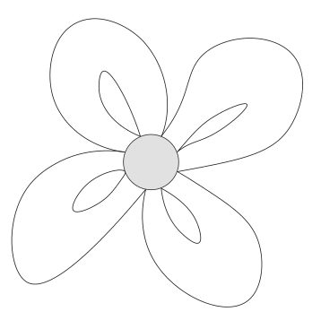
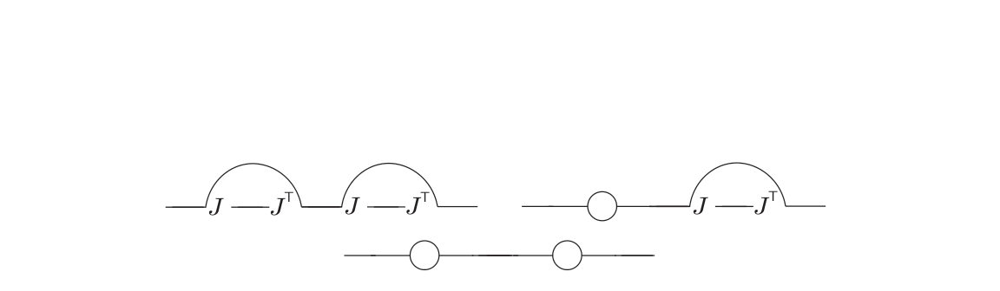
Main problem. Calculating the moments, response functions, and pairwise correlations of a large nonlinear recurrent neural network at a fixed connectivity without averaging over synaptic weights.
Main result. The paper proves a generalized Wick theorem for the network and validates the Shen-Hu conjecture, providing closed-form Fourier space equations for the linear response and correlation functions.
Method. The author uses the Martin-Siggia-Rose-De Dominicis-Janssen (MSRDJ) formalism, a 1/sqrt(N) diagrammatic expansion, and graph theory (ribbon graphs and Euler's theorem) to identify and resum leading-order terms.
Summary. This paper provides an analytical solution for the dynamics of large nonlinear recurrent neural networks at fixed connectivity. By using a diagrammatic expansion, the author shows that the leading-order behavior is dominated by 'chain' diagrams after a specific cancellation of 'rainbow' and 'bubble' diagrams. The work proves the Shen-Hu conjecture and establishes a generalized Wick theorem for these systems. This allows for the calculation of precise correlation and response functions in the large N limit without needing to average over the random weights.
Model / system. A large (N) nonlinear random recurrent neural network with dynamics defined by preactivations subject to random synaptic weights (J_ij) and Gaussian external input noise.
Key observables. Moments and response functions of pre- and post-activations, pairwise correlations, and linear response functions.
Important parameters / regimes. Large N limit, synaptic variance (sigma^2), connectivity matrix (J_ij), and the 1/sqrt(N) expansion parameter.
Assumptions / limitations. The analysis assumes the large N limit, i.i.d. synaptic weights, and that the geometric series of the expansion does not diverge (sigma|phi'| < 1).
Figures summary. Figures define diagrammatic notation (gaps, bubbles, wavy lines), illustrate the difference between leading-order and subleading diagrams, and show the structure of rainbow and chain diagrams.
Paper structure. The paper begins by defining the model and the MSRDJ generating functional, proceeds to a diagrammatic expansion in 1/sqrt(N), uses graph theory and combinatorial arguments to prove the cancellation of certain diagrams (rainbows and bubbles), and concludes with the derivation of closed-form solutions for correlation and response functions.
We calculate the moments and response functions of a nonlinear random recurrent neural network in the large $N$ limit. Our approach does not require averaging over synaptic weights and gives the first nontrivial term in a $1/\sqrt{N}$ expansion of general intensive-order correlation functions, proving a recent conjecture by Shen and Hu as a special case. Our results provide an analytical link between synaptic connectivity, correlations in spontaneous activity, and the response of a network to small perturbations.
Authors: Hiroki Nakano, Toru Sakai
Type: theory · Category: strongly correlated electrons · PDF: https://arxiv.org/pdf/2604.24055v1
Analysis basis: full PDF text, analyzed in chunks
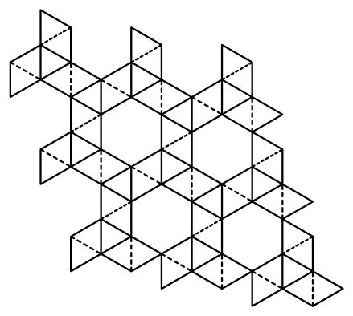
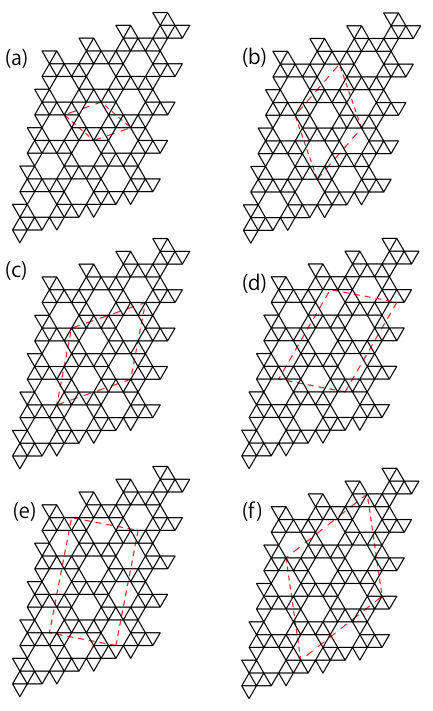
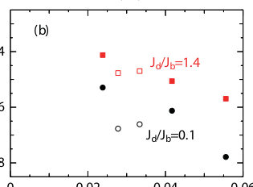
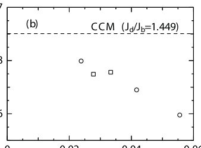
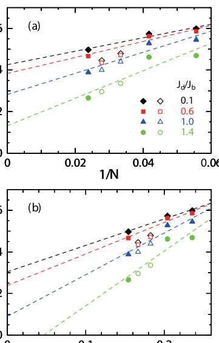
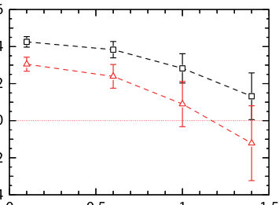
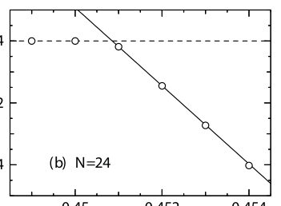
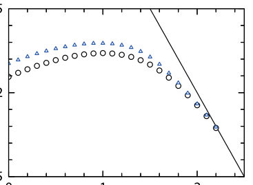
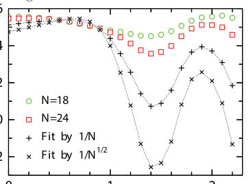
Main problem. The study investigates the spin excitation gap and ground-state properties of the Heisenberg antiferromagnet under varying degrees of frustration, specifically tracing the evolution from the bounce-lattice to the exact-dimer system.
Main result. For both S=1/2 and S=1, the system is gapped at low Jd/Jb and becomes gapless at Jd/Jb approximately 1.4; for S=1, an additional gapped region appears near the exact-dimer phase boundary.
Method. Highly parallelized numerical diagonalization using the Lancative algorithm on clusters up to 42 sites (S=1/2) and 24 sites (S=1), with finite-size scaling analysis.
Summary. This paper explores the phase transitions and spin gap behavior in frustrated 2D Heisenberg antiferromagnets. By studying the transition from the bounce-lattice to the exact-dimer system, the authors identify specific regimes where the system is gapped or gapless. The study provides new numerical data for S=1/2 clusters up to 42 sites and explores the previously less understood S=1 case. These findings help clarify the magnetic properties of frustrated lattices and relate to experimental observations in materials like Na2Mn3O7.
Model / system. A 2D Heisenberg antiferromagnet with spin S=1/2 and S=1, featuring interaction bonds (Jb) forming a bounce lattice and dimer interactions (Jd) that transition the system through a maple-leaf lattice to an exact-dimer phase.
Key observables. Ground-state energy (Eg), spin excitation gap (Delta), and spin correlation functions (dimer, hexagonal, and triangular bonds).
Important parameters / regimes. Spin magnitude (S=1/2, S=1) and the interaction ratio Jd/Jb (or Jb/Jd).
Assumptions / limitations. The study assumes periodic boundary conditions and uses finite-size clusters to extrapolate to the thermodynamic limit.
Figures summary. Fig 1 shows the lattice schematic; Fig 3 shows ground-state energy per site; Fig 6 shows extrapolation analysis of the spin gap; Fig 7 shows ground-state energy as a function of Jd/Jb.
Paper structure. The paper introduces the lattice models, describes the numerical diagonalization method, presents results for S=1/2 and S=1 spin systems, and concludes with phase boundary identification and comparison to existing literature.
The spin-S Heisenberg antiferromagnet on the two-dimensional lattice is investigated for S=1/2 and S=1. We consider interaction at isolated dimers ($J_{\rm d}$) and interaction bonds that form the bounce lattice ($J_{\rm b}$). For $J_{\rm d}=J_{\rm b}$, the system is reduced to the maple-leaf-lattice antiferromagnet. We primarily conduct highly parallelized numerical diagonalization to examine the spin excitation gap above the ground state for various $J_{\rm b}/J_{\rm d}$ cases. For S=1/2, we report calculations for a 42-site cluster that has not been previously treated. The S=1 case is examined for the first time for clusters up to 24 sites. Regardless of whether S=1/2 or 1, we find that the system has a gapped nature for small $J_{\rm d}/J_{\rm b}$ and becomes gapless at $J_{\rm d}/J_{\rm b}\sim 1.4$. For S=1, we also find that another gapped region appears between the gapless case at $J_{\rm d}/J_{\rm b}\sim 1.4$ and the boundary of the exact-dimer phase.
Authors: Robert T. Nachtrieb
Type: theory · Category: statistical mechanics · PDF: https://arxiv.org/pdf/2604.22976v1
Analysis basis: full PDF text, analyzed in chunks
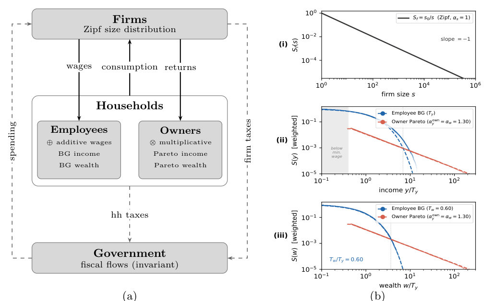
Main problem. The lack of a mechanistic link between firm-level microeconomics and the observed two-class structure of household income and wealth (exponential Boltzmann-Gibbs bulk vs. power-law Pareto tail).
Main result. The paper derives the two-class income/wealth structure from first principles, showing that the Pareto exponent for wealth is directly determined by firm-size scaling without tuned parameters.
Method. The study uses Fokker-Planck equations, Maximum Entropy principles, and mixture aggregation, validated by Monte Carlo agent simulations and empirical data from Compustat and BDS.
Summary. This paper provides a statistical mechanics derivation of the observed two-class structure in economic inequality. It connects firm-level dynamics, specifically Gibrat's law and firm-size scaling, to the emergence of a Boltzmann-Gibbs distribution for the majority and a Pareto tail for the wealthy. The model successfully reproduces empirical wealth exponents using observed firm-value scaling without any free parameters. It also predicts the ratio of wealth to income for lower-class households and firm exit rates.
Model / system. A three-sector economy consisting of Firms, Households (Employees and Owners), and Government, modeled via Gibrat's Law for firm growth and additive/multiplicative noise dynamics for wealth.
Key observables. Pareto wealth exponent (alpha_w), firm-size exponent (theta), wealth-to-income temperature ratio (Tw/Ty), and firm exit rates.
Important parameters / regimes. Firm-value scaling (theta), returns-per-employee size exponent (zeta), and the crossover point (x1) determined by demography.
Assumptions / limitations. Within-firm wages follow Maximum Entropy distributions; firm growth follows Gibrat's Law (multiplicative Itô noise); wealth dynamics for employees involve a reflecting boundary at zero.
Figures summary. Figure 1(a) provides a money flow diagram illustrating the interactions and fiscal flows between the firm, household, and government sectors.
Paper structure. The paper establishes a mechanistic chain from firm growth (Gibrat's Law) to firm size (Zipf), then applies Maximum Entropy and mixture aggregation to derive income/wealth distributions, followed by empirical validation using firm-value and exit-rate data.
The distribution of income and wealth in developed economies exhibits a robust two-class structure: an exponential (Boltzmann--Gibbs) bulk covering $\sim\!97\%$ of the population, and a power-law (Pareto) tail in the upper $\sim\!3\%$. We derive this structure from first principles via an explicit mechanistic chain: Gibrat's law for firm growth implies a Zipf firm-size distribution; maximum entropy applied to within-firm wages, combined with mixture aggregation across firms, yields a Boltzmann--Gibbs income distribution with temperature $T_y$ for employees; additive-noise wealth dynamics with a reflecting wall at zero produce a Boltzmann--Gibbs employee wealth distribution with temperature $T_w$. For firm owners, multiplicative capital returns produce a Pareto wealth tail with exponent $α_w = 1/θ$, where $θ$ encodes how total returns scale with firm size. The empirical value $α_w \approx 1.30$ \cite{Yakovenko2009} is reproduced with no tuned parameters from the observed firm value scaling $V = V_0(s/s_0)^{0.77}$~\cite{Axtell2001}, and simultaneously yields the first quantitative estimate of the returns-per-employee size exponent: $ζ= θ- 1 \approx -0.23$. For empirical values $ν\approx 0.3$, $c \approx 0.81$, $k \approx 0.15$ (BEA long-run savings rate $\approx 5\%$), the model gives $T_w/T_y \approx 1.7\,\text{yr}$, i.e.\ lower-class households hold roughly 1--2 years of income as wealth, with the precise ratio depending on savings and tax rates and testable cross-country. As a parameter-free empirical test, firms near zero profit have a cash martingale whose first-passage time gives establishment exit rate $\sim t^{-1/2}$; convolving with the Zipf firm-size distribution yields firm-level exit rate $\sim t^{-1/2}\!\log t$, with apparent exponent $b = 0.295 \pm 0.03$, confirmed against BDS firm-age data with no free parameters.
Authors: Petr Červenka, Vít Jakubský
Type: theory · Category: other · PDF: https://arxiv.org/pdf/2604.23759v1
Analysis basis: full PDF text, analyzed in chunks
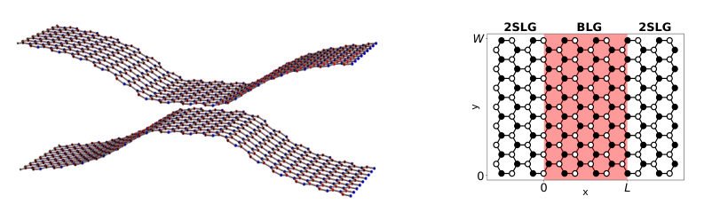
Main problem. Designing a theoretical framework for quantum couplers in Dirac materials that can modulate the polarization of transmitted quasiparticles (such as layer, spin, or valley) without causing significant reflection or loss.
Main result. The authors developed a symmetry-guided design strategy that uses Klein tunneling to ensure reflectionless transmission, demonstrating that polarization can be precisely controlled via external electric and magnetic fields in AA-bilayer graphene.
Method. The authors use an auxiliary Hamiltonian approach and a unitary transformation to 'reverse-engineer' the required potential for a desired polarization transformation, treating Klein tunneling as free-particle dynamics in disguise.
Summary. This paper presents a method to design quantum couplers in Dirac materials like graphene that can switch or rotate the polarization of particles. By utilizing the property of Klein tunneling, the authors show how to achieve perfect, lossless transmission. They demonstrate that external electric and magnetic fields can be used to precisely tune the output state, such as converting layer polarization to cone polarization. The framework is particularly effective for nanoribbon geometries where transport is restricted to specific channels.
Model / system. The system consists of AA-stacked bilayer graphene nanoribbons with armchair edges and localized interlayer interaction, described by a Hamiltonian including interlayer hopping, electric fields, and parallel magnetic fields.
Key observables. Polarization coefficients (layer, cone, and pseudo-spin), transmission amplitudes, reflection coefficients, and conductance.
Important parameters / regimes. Interlayer coupling strength (t), perpendicular electric field (v30), parallel magnetic field (v20), coupler length (L), and nanoribbon width (W).
Assumptions / limitations. The construction is exact at normal incidence (py = 0) and assumes the continuity of the wavefunction at the coupler boundaries.
Figures summary. Figure 1 introduces the system; Figure 2 shows the dependence of polarization coefficients on the electric field; Figure 3 illustrates the oscillation of polarization coefficients as a function of other parameters.
Paper structure. The paper introduces a theoretical framework for coupler design, details the physical model of AA-bilayer graphene, applies a unitary transformation method to achieve controlled polarization, and analyzes various regimes including narrow-metallic and wider-coupler multi-channel transport.
We develop a theoretical framework for designing quantum couplers based on Dirac materials that can modulate the polarization of transmitted quasiparticles without significantly perturbing their propagation. We analyze in detail the conditions required for perfect transmission (Klein tunneling) together with controlled polarization transformation of the incoming states. We then discuss an explicit model of a quantum coupler composed of AA-stacked bilayer graphene nanoribbons with armchair edges and a localized interlayer interaction. Perfect transmission through the desired polarization channels is examined for both narrow and wide couplers. We show that the transmission of polarized states can be finely tuned by external fields.
Authors: Richard H. J. Kim, Sunwoong Yang, Taehoon Kim, Samuel J. Haeuser, Joong-Mok Park, Randall K. Chan, Thomas Koschny, Young-Mi Bahk, Sung Ju Hong, Jigang Wang
Type: experiment · Category: other · PDF: https://arxiv.org/pdf/2604.22940v1
Analysis basis: full PDF text, analyzed in chunks
Main problem. Investigating the nanoscale terahertz conductivity and magnetotransport properties of encapsulated monolayer graphene at cryogenic temperatures and under magnetic fields.
Main result. The study demonstrates that graphene acts as a near-perfect high-q reflector in the THz regime, with measurable changes in near-field amplitude observed under magnetic fields up to 1 T, consistent with cyclotron resonance of Dirac fermions.
Method. Scattering-type scanning near-field optical microscopy (s-SNOM) using a cantilever-based AFM, combined with time-domain THz spectroscopy and magneto-optical conductivity calculations.
Summary. This paper uses THz near-field microscopy to probe the local conductivity of encapsulated graphene at very low temperatures and in magnetic fields. It shows that graphene behaves as a near-perfect reflector for THz waves, but this reflectivity is subtly tuned by magnetic fields. The results align with theoretical predictions of cyclotron resonance in Dirac fermions. This work provides a foundation for studying nanoscale THz transport in 2D quantum materials.
Model / system. The physical system is monolayer graphene encapsulated between two flakes of hexagonal boron nitride (h-BN/graphene/h-BN) on a SiO2/Si substrate, studied in a split-pair magnet cryostat.
Key observables. Near-field amplitude (S2), topography, THz near-field images, relative amplitude spectra, and longitudinal magneto-optical conductivity.
Important parameters / regimes. Temperatures down to 5 K, magnetic fields up to 1 T, THz frequency range of 0.5 to 1.8 THz, and tip radius of 40 nm.
Assumptions / limitations. Assumed charge-neutral graphene, omission of h-BN layers in the transfer matrix model for simplicity, and use of a phenomenological width for Landau level transitions.
Figures summary. Fig 1 shows the experimental setup and THz near-field maps; Fig 2 displays line scans across edges and signal variations at different magnetic fields; Fig 3 presents THz time traces, Fourier-transformed spectra, and relative amplitude spectra.
Paper structure. The paper introduces the experimental setup and sample preparation, presents THz near-field imaging and topography, details the magneto-optical response and conductivity measurements, compares experimental data to theoretical models, and concludes with the implications for 2D quantum materials.
This study investigates the nanoscale conductivity of encapsulated monolayer graphene at temperatures down to 5 K and magnetic fields of up to 1 T. We use the scattering-type scanning near-field optical microscopy (s-SNOM) technique to probe magnetic-field-dependent responses from graphene close to charge neutrality in the terahertz spectral region. We observe the near-perfect high-$q$ reflector behavior of graphene but with subtle changes by the presence of magnetic fields. Measurements align with calculations of the magneto-optical conductivity and the near-field spectroscopic contrast that describes the field-tunable cyclotron resonance of Dirac fermions. Our result provides an initial step toward understanding temperature and magnetic-field effects on nanoscale terahertz transport in two-dimensional quantum materials.
Authors: Vibhu Mishra
Type: theory · Category: strongly correlated electrons · PDF: https://arxiv.org/pdf/2604.24274v1
Analysis basis: full PDF text, analyzed in chunks
Main problem. Investigating how Umklapp scattering corrections modify Landau damping and quantum critical transport in 2D and 3D Ising-nematic metals.
Main result. In 2D, Umklapp processes introduce a new frequency dependence (Omega^2/3 or Omega^1/2) that can potentially reduce the temperature scale for linear resistivity, whereas in 3D, the Umklapp contribution does not modify the standard criticality.
Method. The study uses the Random Phase Approximation (RPA) and explicit patch calculations to evaluate the particle-hole bubble and the imaginary part of the boson self-energy.
Summary. This paper examines how Umklapp scattering, occurring when a Fermi surface is near a Brillouin zone boundary, affects the properties of quantum critical metals. It finds that in 2D, these processes introduce new frequency-dependent terms in the boson self-energy, which can alter the temperature scale for the onset of linear resistivity. In contrast, the effect is negligible in 3D. The findings are highly dependent on the specific large-N theoretical framework used to model the system.
Model / system. A 2D and 3D Ising-nematic metal where the Fermi surface approaches the Brillouin zone boundary, modeled via an effective fermion-boson coupling (Yukawa-type) and analyzed in various large-N limits.
Key observables. Landau damping (boson self-energy), resistivity, scattering rate, and the dynamical critical exponent (z).
Important parameters / regimes. Momentum transfer (q), frequency (Omega), temperature (T), distance to the zone boundary (Delta q), and the number of species (N).
Assumptions / limitations. Assumes a large-N limit (specifically analyzing naive vs. matrix large-N), uses Taylor expansions for the Fermi distribution and dispersion near the Fermi surface, and assumes Omega is much smaller than the Fermi energy.
Figures summary. Figure 1 shows antipodal patches on the Fermi surface; Figure 2 illustrates Umklapp contributions; Figure 3 shows temperature-dependent crossover scales; Figure 5 illustrates the Fermi surface parameterization for scattering rate calculations.
Paper structure. The paper begins by defining the Umklapp contribution to the polarization bubble, proceeds to a dimensional analysis comparing 2D and 3D, evaluates the frequency scaling in different temperature regimes, and concludes by discussing the stability of the z=3 criticality and the relevance of different large-N limits.
We compute the particle--hole bubble for an Ising-nematic metal when the critical Fermi surface approaches the Brillouin zone boundary for $d=2$ dimensions. We find two qualitatively distinct contributions: i)~the standard antipodal piece, which gives $Π_{\rm{ATP}}(\mathbf{q}, iΩ)\proptoΩ/q$ and ii)~an additional umklapp piece from electrons near the zone boundary, which gives $Π_{\rm{U}}(\mathbf{q}, iΩ)\propto Ω^α$ at the minimum umklapp momentum $q\approx Δ_q$ with $α= 2/3 $ or $1/2$ depending on the temperature $T$. At high $T$ when $α= 1/2$, the minimum $T$ for the activation of linear/quasi-linear in $T$ resistivity, which is expected to be $T_U \propto Δ_q^3$ from $z=3$ criticality, could potentially get reduced to $T_U \propto Δ_q^4$ due to the $\sqrtΩ$ term and discuss why we find only one hyper-specific scenario where this possibility might be realized. For $d=3$ the umklapp contribution gives $Π_{\rm{U}}\sim Ω$ irrespective of $T$ therefore $T_U$ is not modified in this case.
Authors: Ethan Dickey, Sabre Kais
Type: theory · Category: quantum information and computing · PDF: https://arxiv.org/pdf/2604.23991v1
Analysis basis: full PDF text, analyzed in chunks
Main problem. Determining the structural requirements for weighted graphs to realize arbitrary complex quantum-like (QL) bit states as exact, spectrally isolated, two-level eigenstates with a real spectrum.
Main result. The authors prove that while complex-symmetric and real-symmetric couplings face phase obstructions that prevent universality, Hermitian coupling provides a robust mechanism to realize any complex amplitude ratio with a prescribed real eigenvalue and spectral gap.
Method. The study uses algebraic graph theory, specifically graph reduction of block-coupled regular graphs to a 2x2 effective operator, and spectral analysis of the reduced matrix.
Summary. This paper investigates how to construct 'quantum-like' bits using complex-weighted graphs. It identifies that standard symmetric coupling models are not universal because they restrict the possible complex phases of the target state. However, the authors prove that using Hermitian coupling allows for the exact realization of any arbitrary complex amplitude ratio with a real spectrum. Finally, they show that these states can be densely approximated using finite graphs with simple discrete weights.
Model / system. A system of block-coupled regular subgraphs (Ga and Gb) connected via a bipartite coupling block C, acting as a quantum-like two-level system in a synchronized subspace.
Key observables. Complex amplitude ratio (r), target eigenvalue (lambda), and spectral gap (delta).
Important parameters / regimes. Amplitude ratio r, eigenvalue lambda, spectral gap delta, and the discrete weight alphabet {0, +/-1, +/-i}.
Assumptions / limitations. The subgraphs are assumed to be regular, and the coupling is assumed to be algebraically regular to ensure the existence of a synchronized subspace.
Figures summary. Figure 1 illustrates the block-coupled graph structure and the reduction to the effective two-level system.
Paper structure. The paper first establishes the reduction principle for block-coupled graphs, then presents an obstruction theorem for non-universal symmetric models, followed by a proof of universality for Hermitian and asymmetric models, and concludes with a density theorem for discrete graph realizations.
Why it may be interesting. This work is interesting for researchers in quantum information and open quantum systems because it identifies a fundamental structural mechanism (Hermitian conjugate pairing) for synthesizing arbitrary complex phases in classical network-based quantum-like models.
We study when block-coupled regular graphs can realize prescribed complex quantum-like bit states as exact synchronized eigenstates. Two regular subgraphs $G_A$ and $G_B$ supply normalized all-ones eigenvectors $V_A$ and $V_B$, and algebraically regular bipartite couplings reduce the full graph-supported operator exactly to a $2\times 2$ effective block on $\mathcal S=\operatorname{span} \{ \lvert 0\rangle, \lvert 1\rangle \}$. Within this reduction we prove that two natural symmetric complexifications are not universal under a real-spectrum requirement: complex symmetric coupling with real diagonal regularities forces the target computational basis amplitude ratio $r=ω_2/ω_1$, for $\lvert ψ\rangle = ω_1\lvert 0\rangle + ω_2\lvert 1\rangle$, to satisfy $r^2\in\mathbb{R}$, while real symmetric coupling with complex diagonal regularities forces $r+1/r\in\mathbb{R}$. Replacing complex symmetry by Hermitian coupling removes this phase obstruction. For any nonbasis target state, any prescribed real eigenvalue, and any prescribed nonzero signed spectral gap, a Hermitian weighted coupling realizes the target exactly. Additionally, an independently tuned directed-coupling model gives a second universality mechanism. We then pass from continuous effective parameters to finite weighted graphs with entries in $\{0, \pm1, \pm i\}$ (the fourth roots of unity and zero), characterize the balanced discrete coupling lattice by perfect matchings, and show that exact discrete Hermitian realizations are dense in the synchronized pure-state space. These results give a universality taxonomy for complex QL-bits and identify Hermitian conjugate pairing as the robust structural mechanism that supports arbitrary complex amplitudes with real two-level spectra.
Authors: Heonjoon Park, Julian Stewart, Xiao-Wei Zhang, Taige Wang, Canxun Zhang, Evgeny Redekop, Jiaqi Cai, Weijie Li, Eric Anderson, Takashi Taniguchi, Kenji Watanabe, Jiun-Haw Chu, David Cobden, Andrea Young, Liang Fu, Ting Cao, Di Xiao, Xiaodong Xu
Type: both · Category: strongly correlated electrons · PDF: https://arxiv.org/pdf/2604.23587v1
Analysis basis: full PDF text, analyzed in chunks
Main problem. Investigating how Van Hove singularities (vHSs) in twisted MoTe2 drive unconventional magnetic phases and topological transitions.
Main result. The study identifies a vHS-driven topological magnetism featuring an intervalley-coherent antiferromagnetic state that evolves into a canted phase and a C = -1 Chern insulator under magnetic fields.
Method. Combined transport measurements, reflective magnetic circular dichroism (RMCD), and nano-SQUID-on-tip microscopy with theoretical Hartree-Fock and continuum model calculations.
Summary. This paper explores how Van Hove singularities in twisted MoTe2 can be used to engineer topological magnetism. By tuning the displacement field and filling factor, the authors observe a transition from an intervalley-coherent antiferromagnetic state to a Chern insulator. The study demonstrates that the high density of states at the vHS promotes complex spin textures, including a topological Hall effect. This work establishes a new route for controlling chiral magnetism in moiré materials.
Model / system. A large-angle twisted bilayer MoTe2 (tMoTe2) moiré superlattice, specifically focusing on the 4.8 degree regime near filling factor nu = -1.
Key observables. Longitudinal resistance (Rxx), Hall resistance (Rxy), RMCD signal, valley polarization, and scalar spin chirality.
Important parameters / regimes. Twist angle (theta), filling factor (nu), displacement field (D/epsilon0), and magnetic field (muB).
Assumptions / limitations. The theoretical model assumes a continuum Hamiltonian for the K valley and uses a screened Coulomb interaction within a Hartree-Fock framework.
Figures summary. Figure 1 shows the moiré lattice configuration, band structure, and transport maps; supplementary figures include Landau fan diagrams, magnetic hysteresis, and nano-SQUID magnetization maps.
Paper structure. The paper introduces the moiré system and vHS physics, details the experimental fabrication and measurement techniques, presents the evolution of electronic and magnetic phases across different twist angles, and concludes with theoretical modeling of the observed magnetic order.
Why it may be interesting. The discovery of tunable, interaction-driven topological magnetism and chiral spin textures in moiré systems provides a platform for studying emergent gauge fields and engineered topological phase transitions.
Van Hove singularities (vHSs) strongly amplify electron interactions and can stabilize correlated phases in topological bands. Here we report signatures of topological magnetism in large-angle twisted bilayer MoTe2 driven by the interplay of vHSs, strong correlations, and valley topology. In a 4.8 degree device, electrostatic tuning to a vHS produces a spontaneous anomalous Hall hot spot near nu = -1. Combined transport and reflective magnetic circular dichroism measurements indicate that this regime is not governed by magnetization alone, but instead emerges from a correlated intervalley-coherent antiferromagnetic state that evolves with doping into a canted phase. With increasing magnetic field, the Hall response develops an additional finite-field component consistent with a topological Hall effect from a noncoplanar spin texture, before transitioning into a C = -1 Chern insulator. Our results establish tunable vHSs in moire topological bands as a route to chiral magnetism and engineering topological phase transitions.
Authors: Caio V. S. Soares, Rodrigo G. Pereira
Type: theory · Category: strongly correlated electrons · PDF: https://arxiv.org/pdf/2604.23014v1
Analysis basis: full PDF text, analyzed in chunks
Main problem. The study investigates how the presence of a Majorana Fermi surface affects the properties of visons (Z2 gauge field vortices) and the stability of the Kitaev quantum spin liquid ground state.
Main result. The vison gap decreases as the Majorana Fermi surface area increases, signaling a potential instability of the spin liquid, while larger Fermi surfaces also tend to screen the vison's effect on local spin correlations.
Method. The authors combine numerical exact diagonalization on finite lattices with an analytical approach using Green's function techniques and scattering phase shifts (Fumi's theorem).
Summary. This paper explores the physics of vison excitations in Kitaev quantum spin liquids that possess a Majorana Fermi surface. By comparing analytical scattering theory with numerical exact diagonalization, the authors show that expanding the Fermi surface reduces the energy cost to create visons, suggesting a transition toward magnetic order. They also demonstrate that the Fermi surface acts to screen the impact of visons on local spin correlations. The work provides important insights into the stability of gapless Kitaev phases.
Model / system. The study focuses on Kitaev-type models, specifically a perturbed Kitaev honeycomb model with next-nearest-neighbor interactions and the Chua-Yao-Fiette (CYF) model on a kagome lattice.
Key observables. Vison gap, Majorana fermion dispersion, local spin correlations, and scattering phase shifts.
Important parameters / regimes. Majorana Fermi surface size, perturbation strength (J'/J), and system size (L).
Assumptions / limitations. The analytical approach focuses on the flux-free sector of the perturbed Kitaev honeycomb model.
Figures summary. Figure 1 illustrates the honeycomb lattice and Z2 flux operators; Figure 2 shows Majorana dispersion and the Fermi surface; Figure 3 shows the kagome lattice and vison pair creation; Figure 5 and 6 present vison gap data; Figure 9 shows spatial maps of spin correlations and their size dependence.
Paper structure. The paper introduces the problem of visons in Majorana metals, presents the perturbed KHM and CYF models, details the analytical and numerical methodologies, reports results regarding the vison gap and spin correlations, and concludes with open questions regarding vison interactions and line Fermi surfaces.
The excitation spectrum of Kitaev quantum spin liquids consists of itinerant Majorana fermions, which can be gapless or gapped, and vortices of a $\mathbb{Z}_2$ gauge field, known as visons, which are always gapped. In this work, we investigate visons in Kitaev-type models where the Majorana fermions form a Fermi surface. In this case, the creation of a vison pair is analogous to introducing a local impurity potential in a metal. Since the gapless modes lead to strong finite-size effects, we compare the numerical calculation of the vison gap on finite lattices with the result from an analytical approach based on Green's function techniques. We find that the vison gap decreases as the size of the Fermi surface increases, signalling an instability of the quantum spin liquid ground state. We also show that larger Fermi surfaces tend to suppress the change in local spin correlations due to the Majorana-vison scattering potential.
Authors: Haisum Hayat, Harry M. Quiney
Type: theory · Category: other · PDF: https://arxiv.org/pdf/2604.23660v1
Analysis basis: full PDF text, analyzed in chunks
Main problem. Extending the calculation of the Wichmann-Kroll vacuum polarization correction from one-electron hydrogenic systems to multi-electron lithium-like systems using finite Gaussian basis sets.
Main result. The authors successfully implemented a Gaussian basis set approach for lithium-like systems, finding results in good agreement (within 1%) with existing literature and demonstrating the method's effectiveness for potentials where analytic Green's functions are unavailable.
Method. The study uses a Dirac-Hartree-Fock (DHF) approach with a 'charge-conjugated, kinetically-matched, Gaussian' (CKG) basis set, which is a variation of the Dual Kinetic Balance (DKB) method, implemented in FORTRAN9 using quadruple precision.
Summary. This paper presents a method for calculating Wichmann-Kroll vacuum polarization corrections in lithium-like atoms using a finite Gaussian basis set. By employing a specialized 'charge-conjugated, kinetically-matched, Gaussian' basis, the authors extend successful one-electron calculations to multi-electron systems. The results show strong agreement with established literature and demonstrate that this basis set approach can handle complex atomic potentials where analytical solutions are not possible. This provides a foundation for future ab initio QED calculations in more complex atomic and molecular systems.
Model / system. The physical system consists of lithium-like and hydrogen-like ions with high atomic numbers (Z = 70 to 100), modeled using the Dirac-Coulomb Hamiltonian and a Gaussian nuclear charge density.
Key observables. Energy shift (delta E) of electron states due to vacuum polarization.
Important parameters / regimes. Atomic number (Z), fine-structure constant (alpha), angular momentum (kappa), and the basis set parameters (alpha=0.01, beta=1.35).
Assumptions / limitations. The calculation focuses on higher-order QED corrections of order alpha(Z*alpha)^(n >= 3) and assumes the validity of the mean-field electron density via the DHF method.
Figures summary. Figure 1 displays Feynman diagrams representing the zero-potential, one-potential, and three-potential contributions to unrenormalized vacuum polarization.
Paper structure. The paper introduces the necessity of QED in strong fields, details the mathematical formalism of the Wichmann-Kroll correction, describes the implementation of the CKG basis set, presents comparative results for hydrogen-like and lithium-like systems, and concludes with the potential for future complex atomic/molecular applications.
Why it may be interesting. This work provides a scalable numerical framework for calculating high-order QED corrections in multi-electron systems, which is essential for high-precision spectroscopy and understanding atomic structure in highly charged ions.
Recent developments have seen the application of finite Gaussian basis sets to the $α(Zα)^{n\geq3}$ vacuum polarization. The energy shift for $s$ and $p$ electron states have been tabulated and their convergence investigated. In this work, we extend this problem to the multi-electron case. Hartee-Fock potentials obtained self-consistently are used to treat the vacuum polarization for lithium-like systems and are found to be in good agreement with comparable results in the literature. The results presented in this work demonstrate the use of Gaussian basis sets for atomic potentials whose Green's functions expressions cannot be simply obtained via analytic or numerical methods.
Papers from cond-mat.mtrl-sci, mes-hall, other, soft, supr-con. These archives are de-prioritized — they appear at the end regardless of relevance score.
Authors: Atanu Patra, Subhamoy Sahoo, Johannes Düreth, Simon Betzold, Sven Höfling
Type: experiment · Category: other · PDF: https://arxiv.org/pdf/2604.23062v1
Analysis basis: full PDF text, analyzed in chunks
Topic relevance: 🔥 quantum optics experiment 4/5 · correlated cavity matter 3/5 · QC/QI experiment 2/5 · Tavis-Cummings & cavity-many-emitter 2/5 · analog quantum simulation 2/5
Main problem. Conventional microcavity fabrication techniques like sputtering or PECVD can damage sensitive 2D materials and degrade electrical contacts, while standard DBR fabrication leads to significant material waste.
Main result. The authors developed a deterministic dry-transfer method to create high-Q dielectric microcavities that preserve the integrity of WS2 monolayers, successfully demonstrating strong exciton-photon coupling at both room and cryogenic temperatures.
Method. A viscoelastic PDMS-based dry-transfer approach is used to pick up and place SiO2/TiO2 Bragg mirror fragments onto a WS2 monolayer, avoiding high-energy deposition processes.
Summary. This paper presents a new way to make high-quality optical cavities for 2D materials without damaging them. By using a 'dry-transfer' method with PDMS, the researchers can place mirrors on top of WS2 monolayers without using harsh deposition techniques. They successfully demonstrated strong light-matter coupling, where excitons and photons interact strongly, even at room temperature. This approach is much more efficient and less wasteful than traditional methods, paving the way for integrated 2D photonic devices.
Model / system. The system is a planar Fabry-Perot microcavity consisting of a WS2 monolayer embedded between a top and bottom SiO2/TiO2 distributed Bragg reflector (DBR) stack.
Key observables. Cavity mode energy, Q factor, Rabi splitting, exciton energy, coupling strength (g), and angle-resolved (k-space) photoluminescence.
Important parameters / regimes. Q factor ~ 4x10^3, Rabi splitting ~ 36 meV at room temperature, and temperature range from 175 K to 275 K.
Assumptions / limitations. The transfer process is assumed to be damage-free and the structural integrity of the 2D material is preserved.
Figures summary. Figures show the dispersion of the cavity mode, microscope images of the structure, Lorentz fits of the spectra, and the variation of k-space photoluminescence across different temperatures.
Paper structure. The paper introduces the fabrication challenge, describes the deterministic dry-transfer method and DBR fabrication, presents the characterization of the cavity modes and Q factor, demonstrates strong coupling in WS2, and analyzes the temperature dependence of the coupling strength.
Why it may be interesting. This work provides a robust experimental platform for studying cavity QED and light-matter interactions in 2D materials, which is essential for developing scalable photonic quantum technologies and exploring polaritonic physics.
Optical cavities play a central role in photonic and quantum technologies by enhancing light-matter interactions. In semiconductor microcavities, achieving high quality (Q) factors typically relies on sophisticated epitaxial growth techniques, such as molecular beam epitaxy, which offer atomic-scale precision but are costly and limited in material compatibility. For dielectric microcavities, high Q factors can be achieved using dielectric Bragg mirrors. However, conventional deposition techniques for the top mirrors, such as plasma-enhanced chemical vapor deposition or sputtering, can damage embedded emitters. This limitation is particularly severe for van der Waals materials, especially atomically thin semiconductors. Moreover, the conventional top-mirror deposition can cover or degrade predefined metal contacts. Recovering electrical access typically requires additional lithography and etching steps. Here, a deterministic dry-transfer approach is developed to fabricate complete dielectric microcavities using both top and bottom SiO_2/TiO_2 Bragg mirrors without post-growth lift-off processes, reaching a Q factor ~ 4x10^3. Using a WS_2 monolayer as the active medium, clear signatures of strong exciton-photon coupling are observed at both room temperature and cryogenic temperatures. These results demonstrate an efficient cavity fabrication approach that preserves the integrity of the emitter of layered materials, enabling next generation integrated photonic devices.
Authors: Sarthak Tripathi, Kartik Gaur, Priyabrata Mudi, Peter Ludewig, Alexander Kosarev, Kerstin Volz, Imad Limame, Stephan Reitzenstein
Type: experiment · Category: quantum information and computing · PDF: https://arxiv.org/pdf/2604.23422v1
Analysis basis: full PDF text, analyzed in chunks
Topic relevance: 🔥 QC/QI experiment 4/5 · 🔥 quantum optics experiment 4/5 · interference shaping light 2/5
Main problem. The challenge of creating single-photon sources that simultaneously offer high extraction efficiency, wide electrical tunability, and compatibility with silicon-based telecom-wavelength quantum networks.
Main result. Demonstrated a silicon-compatible, electrically tunable InGaAs quantum dot platform in the telecom O-band that achieves a record 16 nm Stark tuning range and high single-photon purity up to 77 K.
Method. The researchers used MOCVD growth of III-V layers on silicon, deterministic electron-beam lithography for device fabrication, and micro-photoluminescence spectroscopy combined with Hanbury Brown and Twint measurements.
Summary. This paper presents a breakthrough in quantum photonics by integrating InGaAs quantum dots directly onto silicon for telecom-band operation. The researchers developed an electrically contacted circular Bragg grating that allows for a record-breaking 16 nm wavelength tuning via the Stark effect. The device maintains high single-photon purity and efficient photon extraction even at temperatures up to 77 K. This platform offers a scalable route for building large-scale, silicon-compatible quantum communication networks.
Model / system. The platform consists of InGaAs quantum dots embedded in electrically contacted circular Bragg grating (eCBG) resonators, integrated on a silicon substrate via a GaP nucleation and defect-filtering layer architecture.
Key observables. Photon extraction efficiency (PEE), second-order autocorrelation g2(0), spectral tuning range (nm/meV), radiative lifetime, and single-photon purity.
Important parameters / regimes. Telecom O-band (1302 nm), temperature range 4 K to 77 K, Stark shift of 16 nm, and photon extraction efficiency of 21.7%.
Assumptions / limitations. The design assumes that the loss introduced by the electrical ridge-based architecture can be minimized to maintain high optical performance.
Figures summary. Figure 1 shows the heterostructure schematic and 3D device architecture; Figure 5 displays temperature-dependent photoluminescence and photon statistics; Figure 6 demonstrates the electrical tuning of two separate emitters into spectral resonance.
Paper structure. The paper introduces the integration challenge, describes the MOCVD growth and device fabrication, presents the optical and electrical characterization of the eCBG resonators, demonstrates the large Stark tuning range, and concludes with the demonstration of spectral alignment between two separate emitters.
Why it may be interesting. This work is highly relevant to quantum optics and quantum networks as it provides a scalable, silicon-integrated method for controlling the spectral properties of single-photon emitters, which is essential for interference-based quantum protocols.
Semiconductor quantum dots (QDs) offer outstanding quantum-optical properties, making them highly attractive for quantum information technologies. However, combining wide-range electrical tunability, efficient photon extraction, elevated-temperature operation, monolithic silicon integration, and telecom-wavelength compatibility remains a major challenge. Here, we demonstrate electrically contacted circular Bragg grating (eCBG) resonators incorporating InGaAs QDs directly grown on silicon, enabling bright single-photon emission in the telecom O-band. Deterministic electron-beam lithography and a ridge-based vertical p--i--n diode architecture enable precise device integration and electrical control of individual emitters. The QD--eCBGs exhibit a quantum-confined Stark shift of approximately 16 nm (11 meV) at 4 K, representing a record for QDs embedded in nanophotonic structures at telecom wavelengths. This is achieved alongside a photon extraction efficiency of $(21.7 \pm 3.0)\%$ into the first lens, while maintaining excellent radiative properties and high single-photon purity, with $g^{(2)}(0)=0.0078 \pm 0.0012$ below saturation and $g^{(2)}(0)=0.0183 \pm 0.0021$ at saturation under pulsed excitation. Robust antibunching persists up to 77 K, with $g^{(2)}(0)=0.0663 \pm 0.0056$, enabling operation with liquid-nitrogen or compact Stirling cryocoolers. Furthermore, spatially separated QD--eCBGs can be electrically tuned into spectral resonance without degrading photon statistics. These results establish a silicon-compatible, electrically addressable telecom O-band quantum light platform combining wide spectral tunability, high single-photon purity, and elevated-temperature operation, providing a scalable route toward practical photonic quantum networks.
Authors: Kamal Azaidaoui, Ahmed Jellal, Hocine Bahlouli, A. Al Luhaibi, Michael Vogl
Type: theory · Category: other · PDF: https://arxiv.org/pdf/2604.23279v1
Analysis basis: full PDF text, analyzed in chunks
Topic relevance: non-equilibrium dynamics 3/5 · Kondo & dissipative impurity 2/5 · correlated / nonlocal dissipation 2/5 · methods for driven-dissipative 2/5
Main problem. Investigating how temporal noise (stochastic fluctuations in barrier height) can be used as a mechanism to suppress Klein tunneling in graphene.
Main result. Noise induces a complex longitudinal wavevector in graphene, leading to the exponential suppression of Klein tunneling even at normal incidence, effectively turning a noisy barrier into a tunable dissipative element.
Method. The authors map the stochastic dynamics of a time-dependent potential onto a time-independent Lindblad master equation for the density matrix, which is then solved using a spatial matching technique in a nine-region construction.
Summary. This paper explores how temporal fluctuations in a potential barrier can suppress the Klein tunneling effect in graphene. By using a Lindblad master equation approach, the authors show that noise introduces an imaginary component to the wavevector, causing exponential decay of transmission. This mechanism allows for the tuning of barrier opacity without changing the physical geometry. The findings suggest that controlled noise could improve electron confinement in graphene-based devices, such as quantum dots for spin qubits.
Model / system. The study models electrons in graphene (massless Dirac fermions) and non-relativistic Schrödinger particles traversing a 1D rectangular potential barrier whose height fluctuates according to Gaussian white noise.
Key observables. Transmission probability (T), reflection probability (R), and absorption probability (A), representing the loss of coherent flux.
Important parameters / regimes. Barrier height (U0), noise strength (V0), barrier width (L), incident energy (epsilon), and incident angle (phi).
Assumptions / limitations. The noise is modeled specifically as Gaussian white noise (Markovian/memoryless), and the potential is assumed to be piecewise constant.
Figures summary. Fig 1 shows a schematic of the noisy barrier; Fig 2 shows a realization of Gaussian white noise; Fig 3 shows the nine-region construction in the (x, x') plane; Fig 4 shows T and A for Schrödinger particles; Fig 6 shows angular dependence of T and A; Fig 7 shows energy dependence; Fig 8 compares clean vs. noisy double barriers for confinement.
Paper structure. The paper establishes a benchmark with Schrödinger particles, develops the Lindblad formalism for noise, applies it to graphene to demonstrate Klein tunneling suppression, and discusses applications to quantum dots.
Why it may be interesting. The paper provides an analytical framework for treating stochastic driving as a control mechanism for transport, demonstrating how dissipation can be used to break symmetry-protected phenomena like Klein tunneling.
We study quantum tunneling through a potential barrier whose height fluctuates in time and is modeled by Gaussian white noise. We map the stochastic dynamics onto an equivalent time-independent Lindblad equation for the density matrix, allowing fully analytical solutions. For Schrödinger particles, noise introduces dissipation that suppresses Fabry-Pérot oscillations and yields an exponentially decaying transmission. Applying the same formalism to graphene, we demonstrate that noise induces a complex longitudinal wavevector within the barrier, leading to a strong suppression of transmission and Klein tunneling, even at normal incidence. Our approach promises improved control over Klein tunneling. These results demonstrate that noisy barriers can act as tunable dissipative elements, offering a pathway to enhanced control of electron transport in graphene-based devices. We also briefly discuss how our results could guide the design of graphene quantum dots for potential use in spin qubit devices.
Authors: Giuseppe Fava, Francesco Ginelli, Benoît Mahault
Type: both · Category: statistical mechanics · PDF: https://arxiv.org/pdf/2604.24232v1
Analysis basis: full PDF text, analyzed in chunks
Topic relevance: non-equilibrium dynamics 3/5 · driven-dissipative phase transition 2/5 · non-equilibrium universality 2/5
Main problem. Understanding the mechanism behind the formation of large-scale, density-protected ring structures in active matter under virtual confinement, such as light-responsive patterns.
Main result. The system self-assembles into a high-density nematic ring at the boundary of illumination, which creates a protected disordered core with a density independent of the global particle density.
Method. The study combines microscopic agent-based simulations of a 2D Vicsek-style model with a hydrodynamic continuum theory and linear stability analysis.
Summary. This paper investigates how active nematic particles under light-induced confinement self-organize into dense rings. These rings act as a screen, creating a central core where the density is 'protected' and remains independent of the overall system density. The researchers use both particle simulations and hydrodynamic theory to show that this effect arises from the interplay between alignment and active currents. The findings provide a robust mechanism for pattern formation in active matter that is applicable to various experimental platforms.
Model / system. A 2D model of dry active nematics consisting of self-propelled particles with nematic symmetry, subject to virtual confinement via light-induced polarity reversals at a circular boundary.
Key observables. Local density, nematic amplitude (S), nematic angle (Phi), nematic tensor (Q), and radial density profiles.
Important parameters / regimes. Repulsion strength (beta), global particle density (rho_0), illumination radius (R), and topological charge (k).
Assumptions / limitations. Thin interface limit for the light-induced boundary, a minimal truncation of hydrodynamic equations, and small noise amplitude.
Figures summary. Figure 1 shows an experimental reference of cyanobacteria forming rings and a simulation snapshot of a stationary ring configuration with nematic angle color-coding.
Paper structure. The paper introduces the problem via experimental motivation, presents a microscopic model and its hydrodynamic counterpart, details the emergence of ring formation and density protection, analyzes the scaling and stability of these states, and concludes with limitations.
Why it may be interesting. The concept of density protection and boundary-induced structure formation via localized driving provides insights into non-equilibrium phase transitions and the stability of patterns in driven-dissipative systems.
We investigate photo-responsive structure formation in a minimal model of dry active nematics. Combining microscopic simulations with the analysis of the corresponding hydrodynamic theory, we show that the system generically self-assembles into a dense, nematically ordered ring at the boundary of circular illumination patterns. Remarkably, these boundary structures give rise to a protected disordered core whose density is self-selected and independent of the global particle density. Our analysis reveals that these states emerge from a generic interplay between local nematic alignment and curvature-driven active currents. These results identify a robust route to boundary-induced structure formation in active matter and provide experimentally testable predictions.
Authors: Adam Herling, Ofer Neufeld
Type: theory · Category: other · PDF: https://arxiv.org/pdf/2604.23294v1
Analysis basis: full PDF text, analyzed in chunks
Topic relevance: non-equilibrium dynamics 3/5 · Keldysh / 2PI / non-Gaussian methods 2/5
Main problem. The paper addresses the 'dephasing time problem' in graphene HHG, specifically why experimental high-order harmonics above 3 eV are suppressed and why a very short phenomenological dephasing time is required in simulations.
Main result. Optical phonons cause 'phase scrambling' through destructive interference in the interband current, which suppresses high-energy harmonics and explains the experimental lack of emission above 3 eV. This effect is driven by zero-point motion and is largely temperature-independent.
Method. The authors use a 'static limit' formalism where the lattice is frozen during the electronic timescale, computing HHG by ensemble-averaging over thermally-occupied phonon snapshots using Semiconductor Bloch Equations.
Summary. This paper investigates how optical phonons in graphene influence high harmonic generation (HHG). It reveals that phonons induce phase variations that lead to destructive interference, effectively suppressing high-energy harmonics above 3 eV. The study finds that this suppression is primarily due to zero-point motion, making the effect robust even at low temperatures. Furthermore, the research identifies electron-phonon scattering as the dominant source of electronic dephasing in the strong-field regime.
Model / system. The system is monolayer graphene modeled with a second-order nearest-neighbor tight-binding Hamiltonian. The model includes longitudinal and transverse optical (LO/TO) phonon modes at the Gamma point that perturb the hopping amplitudes.
Key observables. Time-dependent current (intraband and interband components), HHG spectral power, harmonic phase distributions, and HHG ellipticity-dependent curves.
Important parameters / regimes. Laser frequency, ellipticity, temperature, phonon frequency, and a calculated dephasing time of T2 ~ 5.7 fs.
Assumptions / limitations. The 'static limit' approximation assumes the lattice is frozen on the electronic timescale; phonons are treated as fixed snapshots that act on electrons without back-action.
Figures summary. Figure 1 illustrates the phonon-induced lattice distortions and sampling; Figure 2 compares HHG spectra with and without phonons; Figure 4 shows interband coherence decay and dephasing fitting; Figure 5 demonstrates how phonons smooth the ellipticity dependence of harmonics.
Paper structure. The paper introduces the dephasing problem and the role of phonons, describes the tight-binding and phonon-sampling model, presents results on HHG suppression and phase scrambling, discusses temperature dependence and dephasing rates, and concludes with implications for other 2D materials.
Why it may be interesting. It provides a concrete physical mechanism (phononic phase scrambling) for electronic decoherence in a strong-field regime, which is highly relevant to the study of open quantum systems and ultrafast dynamics in solids.
High harmonic generation (HHG) is a widely explored process in solids, where intense lasers drive attosecond-to-femtosecond electron dynamics within bands, causing high-energy emission. While electrons and photons are considered the main players in HHG, solids also host ubiquitous phonons that are typically assumed negligible in HHG due to their longer timescales. We theoretically study HHG in graphene with a formalism including optical phonons in the static limit, where the lattice is frozen on the electronic timescale and HHG is computed by sampling thermally-occupied phonons and ensemble-averaging. We show that in graphene: (i) Optical phonons strongly suppress HHG yields by coupling to interband currents and causing harmonic phase scrambling (destructive interference), explaining the lack of experimental HHG above ~3 eV. (ii) HHG yields become temperature-dependent due to phonon occupations, though in graphene this dependence is weak since phonon energy scales are dominated by zero-point motion. (iii) Optical phonons dephase interband coherences at a rate equivalent to T2~5.7 fs, substantially faster than e-e scattering, suggesting thermal phonons dominate electronic decoherence in strong fields. (iv) Phonons smoothen HHG ellipticity-dependent curves, yielding better agreement with experiments. Remarkably, all effects are timescale-independent, arising in the static picture of electron-phonon interactions, making results transferable to attosecond phenomena. Our results shed light on the dephasing time problem in HHG and the role of phonons on attosecond timescales, with implications for other systems and processes such as Floquet gaps and photocurrents in graphene.
← Index · ← Previous · Next →